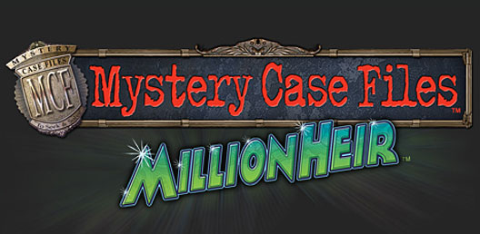

What is a mystery game?
A mystery game is a game that makes mystery its core element. They will often include investigation, puzzles, and roleplaying elements to involve the player in the game's story.

What makes a good mystery game?
Good mystery games utilize the opportunity to create high-stakes and suspenseful situations, bringing you closer to the characters in the story and putting you in the shoes of the protagonist.
